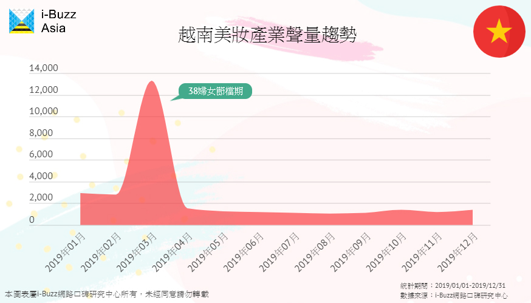
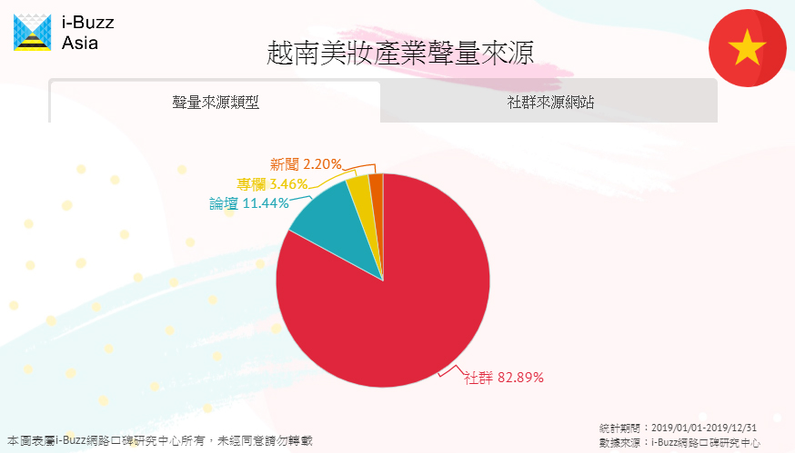
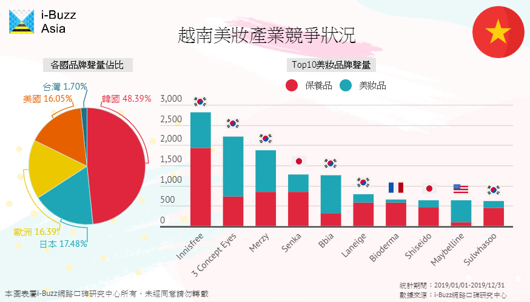
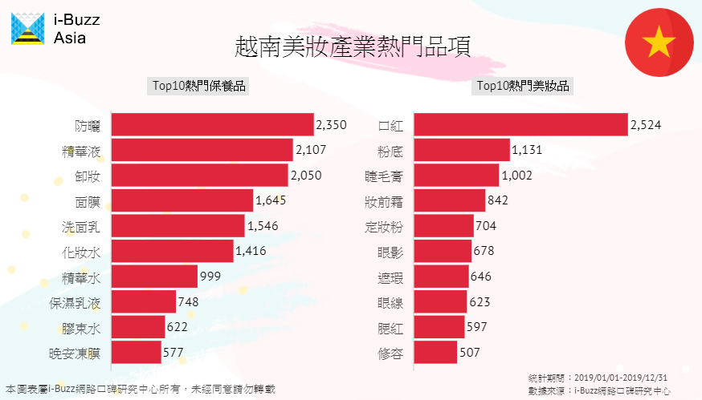
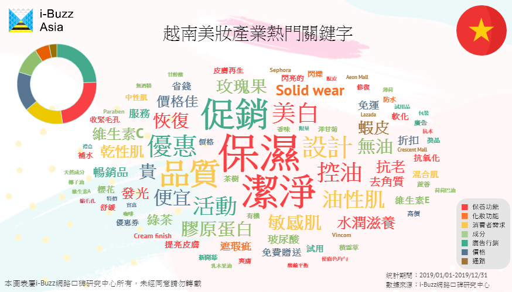

越南美保產業環境報告：把握五大關鍵要點 MIT也能與日韓品牌角逐越南市場
數據期間：2019/01/01-2019/12/31
越南女性化妝的頻率增加，帶動美妝保養市場龐大商機，然而各國美妝市場受「風俗文化、當地氣候、消費習慣」影響差異明顯，貿然進入新市場可能會損兵折將。i-Buzz Asia跨境研究報告顯示，越南美妝消費習慣與台灣有許多不同之處，MIT美妝品牌透過大數據把握五大關鍵要點，也能與日韓品牌角逐越南市場！
產業聲量趨勢：三八婦女節為關鍵檔期 美妝品牌決戰在此時
i-Buzz Asia跨境研究報告發現，不同於台灣的週年慶檔期與西方的黑色星期五，越南美妝的產業大檔落於國際婦女節三月八號前後，眾多美妝品牌會在此時推出優惠、折扣或推出新品，因此整體產業聲量在3月有特別高的討論度。
產業聲量來源：社群比論壇更熱絡 善用Facebook能接觸更多消費者
不同於台灣的論壇文化，在越南美妝產業以社群為主要聲量來源，其中以Facebook的美妝零售粉絲團擁有最多的討論量。越南消費者在購買商品前，往往會主動在社群媒體上蒐集資訊與發文討論，因此粉絲團除了可以讓商品資訊獲得曝光外，也可以蒐集到消費者對商品的評價與使用心得。雖然善用社群影響力更容易接觸越南美妝消費族群，但論壇受活動廣告促銷影響少，在論壇的聲量更能反映真實消費者心聲，所以兩者不可偏廢。
產業競爭狀況：韓國品牌拿下半數聲量 平價品牌有優勢
越南美妝產業中也受到韓國流行文化影響，韓國品牌幾乎佔了五成聲量，其次為日本、歐美品牌，呈現一超三強的市場局勢，而台灣品牌僅佔2%，仍有相當大的成長空間。
越南十大美妝品牌中，韓國品牌佔多數，主因為韓國美妝產品價格較日本、歐美品牌便宜，再加上越南人受到韓國流行文化影響，對於韓國品牌有較高的偏好度。十大品牌中，Senka、Bioderma、Shiseido、Maybelline四個非韓國品牌有個共通特點：價格親民，為一般民眾可買到的價位，顯示越南消費者對美妝品的價格敏感度。
產業熱門產品：為了白皮膚擦防曬 紅唇妝容是標配
根據i-Buzz Asia跨境研究報告，越南消費者對於美妝產品有特別的偏好。在越南人的觀念中，擁有白皙的皮膚是好看的，加上越南天氣普遍炎熱，此時防曬就顯得格外重要，所以防曬產品成為保養品中聲量第一的項目；另外，越南女性習慣以紅唇妝容出門，就算素顏不化妝也一定會擦個口紅，就像台灣人化妝步驟最不能忽略的就是眉毛了，越南消費者包包裡往往都會有一支口紅，使口紅成為越南化妝品最熱門的品項，許多強勢品牌也都以口紅產品贏得許多聲量，如3 Concept Eyes、Merzy、Bbia和Maybelline。
在美妝品中，粉底是大馬消費者最關注的品項，歐美品牌在粉底產品頗受消費者好評，因具備可持續全天的美白、防曬、控油和保濕功能，能滿足大馬消費者對產品持久度和綜合性偏好。由於大馬天氣炎熱，變化多端容易下雨，塗抹太多的美妝品顯得繁瑣且纍贅，故粉底成了出門的基本配備，若要出席正式場合，女性才會化全妝，值得注意的是，大馬女性特別注重眼部妝容，所以眼影、眼線和睫毛膏等眼妝產品也相當熱門。
產業熱門關鍵字：促銷優惠很有用 線上購買成趨勢
i-Buzz Asia跨境研究報告分析美妝產業七大討論面向，發現越南消費者最關注「廣告行銷、保養功能」面向，進一步分析熱門文字雲可以找出消費者討論關鍵。在「廣告行銷」方面，越南人容易受促銷、優惠活動所吸引，有折扣會更吸引消費者購買；在「保養功能」方面，因為炎熱的天氣容易讓人水分流失，導致脫水或皮膚發炎等問題，所以越南人很重視保濕與潔淨。
值得注意的是，蝦皮為討論量最高的通路，可看出越南美妝消費者從實體店面轉移至線上購買的趨勢，雖然蝦皮加入越南電商市場的時間較晚，但因蝦皮簡單化賣家加入的條件與流程，賣家多提供的選擇品項也更多，加上常常推出免運促銷活動，成了消費者最喜歡的美妝通路。
進入越南美妝市場 五大觀察要點不可忘
根據i-Buzz Asia跨境研究報告調查，若美妝品牌想要進入越南市場，必須把握五大關鍵點：
一、三八婦女節為關鍵檔期：此時推出的促銷、優惠活動成效最佳。
二、社群比論壇更熱絡：善用社群媒體的影響力，可接觸到更多美妝消費者。
三、便宜更有競爭力：消費者對價格敏感，平價品牌更有競爭力。
四、防曬與口紅很重要：氣候與風俗文化影響，防曬與口紅為品牌不能忽略的重要產品。
五、線上通路成趨勢：蝦皮擊敗眾多百貨通路，成為越南人購買美妝的重要通路。
雖然韓國品牌因強勢文化在越南美妝市場中佔有優勢，但其他品牌並非沒有機會進入，透過i-Buzz Asia跨境研究報告，台灣平價美妝品有價格上的優勢，能吸引越南消費族群關注，可試著從社群渠道與消費者溝通獲得曝光，把握越南消費者關心的關鍵要素，便有機會開拓越南美妝市場，跟韓國美妝品牌一較高下！
- 01泰國美妝保養產業環境分析：遭歐美韓夾殺 日系品牌應如何挽回頹勢？
- 02馬來西亞美保產業環境分析報告：日本美妝品表現不佳 粉底產品為落後關鍵
- 03越南美保產業環境報告：把握五大關鍵要點 MIT也能與日韓品牌角逐越南市場
- 04不打價格戰！Leffe以「口味」搶攻亞洲第三大啤酒市場
- 05國際與本土品牌的對決：Foodpanda和GrabFood在大馬的勝利秘訣
- 06泰國Q4新創產業洞察：美食與金融新創為發展重點
- 07越南消費者購車看外表？機車造型好不好看決勝負
- 08不敢相信！蘋果耳機聲量竟被Sony壓著打
- 09看準印尼旅遊市場潛力 廉價航空、線上旅行社百花齊放
- 10馬來西亞手搖飲內用商機大 清真認證搶攻穆斯林客群